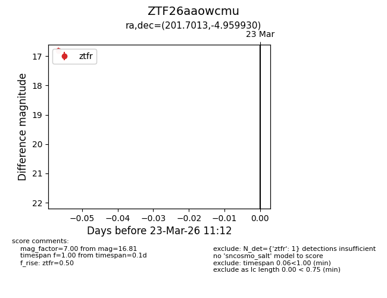
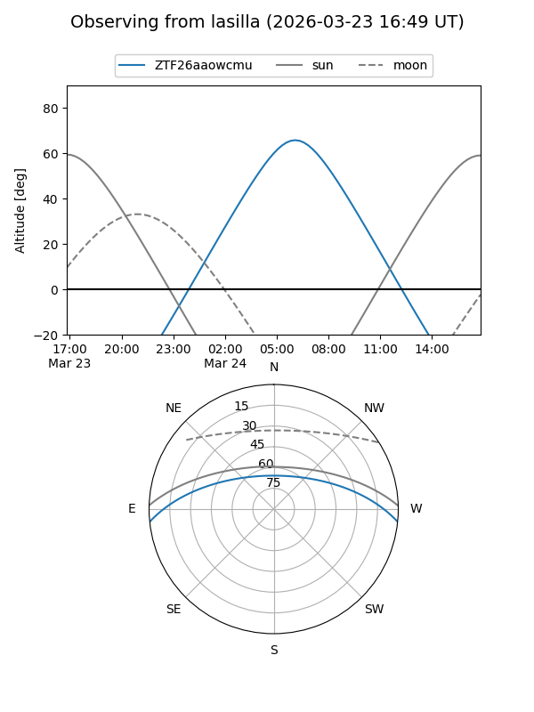
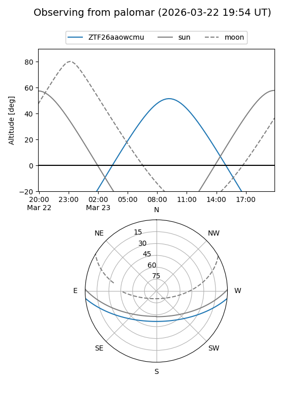

ZTF26aaowcmu
Target ZTF26aaowcmu at 2026-03-23 11:14
Aliases and brokers:
FINK: link
Lasair: link
ALeRCE: link
alt names
ZTF26aaowcmu (ztf,fink_ztf)
Coordinates:
equatorial (ra, dec) = 201.7013,-4.95993
equatorial (HMS+DMS) = 13:26:48.32,-04:57:35.75
galactic (l, b) = (319.1686,+56.79273)
Flags:
Photometry:
last ztfr=16.81
1 ztfr detections
Lightcurve

Visibility


Additional plots